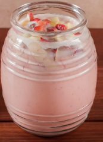
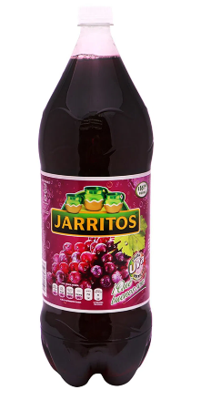
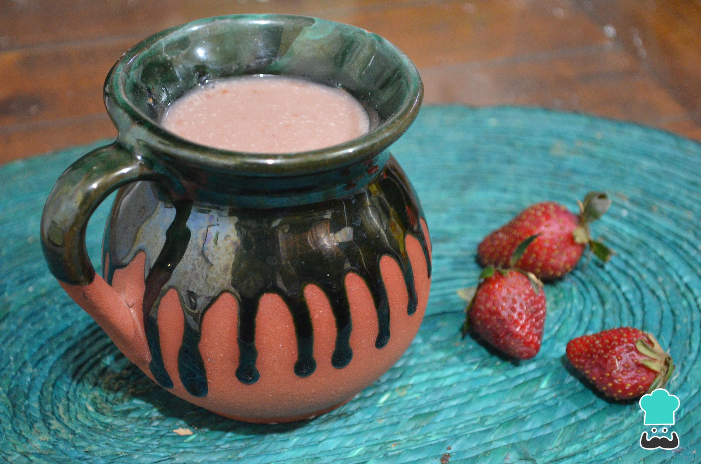
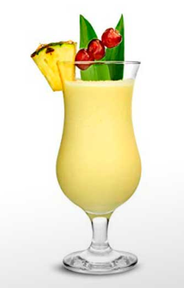

¿Quién soy?
Hola mi nombre es Andrea Aguilar me gusta que me digan Dre, tengo 24 años nací en la ciudad de México por lo que soy mexicana. Estudie la licenciatura en Física y actualmente estoy estudiando javaScript e inglés.
Soy maestra de física, matemáticas e inglés y soy vegetariana, tengo 4 animales de compañía: dos tortugas y dos perros. Me gustan muchos los animales no humanos, así como correr, ir al gym, aprender cosas nuevas, cantar y hacer senderismo. Me identifico como mujer y mis pronombres son ella o she.
Logros
Una de las cosas que me hacen sentir orgullosa de mí misma es haber terminado mi licenciatura a pesar de las situaciones que se me presentaron a lo largo del trayecto en que la curse. Me costó bastante trabajo, pero me siento feliz de haber cursado algo que desde pequeña me gustaba y que a pesar de que en el transcurso de la carrera me sentí afligida y poco capaz, logre terminarla y actualmente estoy en mi forma de titulación.
Otro evento que me hace enorgullecer es el llevar 3 años sin comer carne ya que he aprendido una nueva forma de cocinar así como de comer y a sentirme bien conmigo misma.
Bebidas favoritas
- Agua de frutas 
- Jarrito de Uva 
- Atole de fresa 
- Piña Colada 
- Pulque
- Cerveza